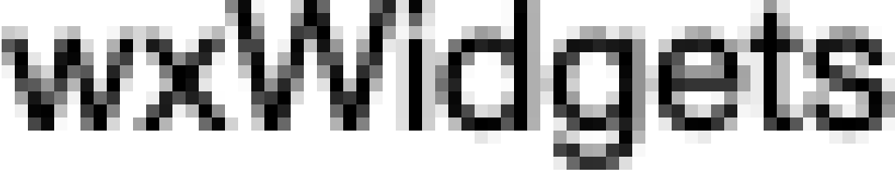
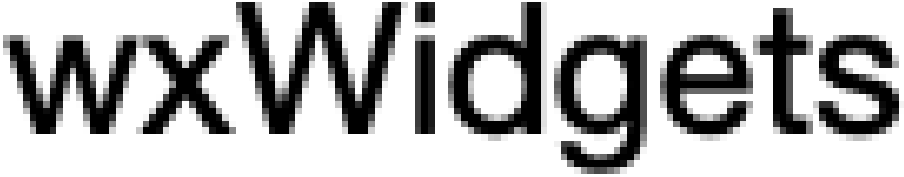

|
|
Version: 3.3.1 |
Table of Contents
Introduction
Many modern displays have way more pixels on the same surface than used to be the norm, resulting in much higher values of DPI (dots, i.e. pixels, per inch) than the traditionally used values. This allows to render texts, or geometric shapes in general much more smoothly.
As an illustration here are two scaled up views of the same text in 11 pt Helvetica using up the same space on screen. First on an original Mac display at 72 dpi, then on a High DPI Display, called "Retina" by Apple with twice as many pixels in both dimensions (144 dpi), thus 4 times the number of pixels on the same surface. Using these the contours are much more detailed.


To the user the DPI is typically expressed using a scaling factor, by which the baseline DPI value is multiplied. For example, MSW systems may use 125% or 150% scaling, meaning that they use DPI of 120 or 144 respectively, as baseline DPI value is 96. Similarly, Linux systems may use "2x" scaling, resulting in DPI value of 192. Macs are slightly different, as even they also may use "2x" scaling, as in the example above, the effective DPI corresponding to it is 144, as the baseline value on this platform is 72.
The Problem with High DPI Displays
If high DPI displays were treated in the same way as normal ones, existing applications would look tiny of them. For example, a square window 500 pixels in size would take half of a standard 1920×1080 ("Full HD") display vertically, but only a quarter on a 3840×2160 ("4K UHD") display. To prevent this from happening, most platforms automatically scale the windows by the scaling factor, defined above, when displaying them on high DPI displays. In this example, scaling factor is 2 and so the actual size of the window on screen would become 1000 when automatic scaling is in effect.
Automatic scaling is convenient, but doesn't really allow the application to use the extra pixels available on the display. Visually, this means that the scaled application appears blurry, in contrast to sharper applications using the full display resolution, so a better solution for interpreting pixel values on high DPI displays is needed: one which allows to scale some pixel values (e.g. the total window size), but not some other ones (e.g. those used for drawing, which should remain unscaled to use the full available resolution).
Pixel Values in wxWidgets
Logical and Device-Independent Pixels
Some systems like eg Apple's OSes automatically scale all the coordinates by the DPI scaling factor, however not all systems supported by wxWidgets do it – notably, MSW does not. This means that logical pixels, in which all coordinates and sizes are expressed in wxWidgets API, do not have the same meaning on all platforms when using high DPI displays. So while on macOS you can always pass in a size of (500,500) to create the window from the previous paragraph, whatever the resolution of the display is, you would have to increase this to (1000,1000) on MSW when working on a 200% display. To hide this difference from the application, wxWidgets provides device-independent pixels, abbreviated as "DIP", that are always of the same size on all displays and all platforms.
Thus, the first thing do when preparing your application for high DPI support is to stop using raw pixel values, as they mean different things under different platforms when DPI scaling is used. Actually, using any pixel values is not recommended and replacing them with the values based on the text metrics, i.e. obtained using wxWindow::GetTextExtent(), or expressing them in dialog units (see wxWindow::ConvertDialogToPixels()) is preferable. However the simplest change is to just replace the pixel values with the values in DIP: for this, just use wxWindow::FromDIP() to convert from one to the other.
For example, if you have the existing code:
you can just replace it with
although replacing it with something like
might be even better.
In any case, remember that window and wxDC or wxGraphicsContext coordinates must be in logical pixels that can depend on the current DPI scaling, and so should never be fixed at compilation time.
Physical Pixels
In addition to (logical) pixels and DIPs discussed above, you may also need to work in physical pixel coordinates, corresponding to the actual display pixels. Physical pixels are never scaled, on any platform, and are used for the real bitmap sizes. They are also used for drawing operations on wxGLCanvas, which is different from wxDC and wxGraphicsContext that use logical pixels.
Under MSW physical pixels are same as logical ones, but when writing portable code you need to convert between logical and physical pixels. This can be done using convenience wxWindow::FromPhys() and wxWindow::ToPhys() functions similar to the DIP functions above or by directly multiplying or dividing by wxWindow::GetContentScaleFactor(): this function returns a value greater than or equal to 1 (and always just 1 under MSW), so a value in logical pixels needs to be multiplied by it in order to obtain the value in physical pixels.
For example, in a wxGLCanvas created with the size of 100 (logical) pixels, the rightmost physical pixel coordinate will be 100*GetContentScaleFactor() under all platforms.
You can convert from DIPs to physical pixels by converting DIPs to the logical pixels first, but you can also do it directly, by using wxWindow::GetDPIScaleFactor(). This function can return a value different from 1 even under MSW, i.e. it returns DPI scaling for physical display pixels.
Warning: It is possible that conversion between different pixel coordinates is not lossless due to rounding. E.g. to create a window big enough to show a bitmap 15 pixels wide, you need to use FromPhys(15), however the exact result of this function is not representable as an int when using 200% DPI scaling. In this case, the value is always rounded upwards, i.e. the function returns 8, to ensure that a window of this size in logical pixels is always big enough to show the bitmap, but this can only be done at the price of having one "extra" pixel in the window.
Summary of Different Pixel Kinds
Under MSW, logical pixels are always the same as physical pixels, but are different from DIPs, while under all the other platforms with DPI scaling support (currently only GTK 3 and macOS), logical pixels are the same as DIP, but different from physical pixels.
However under all platforms the following functions can be used to convert between different kinds of pixels:
- From DIP to logical pixels: use wxWindow::FromDIP() or wxWindow::ToDIP().
- From physical to logical pixels: use wxWindow::FromPhys() or wxWindow::ToPhys().
- From DIP to physical pixels: multiply or divide by wxWindow::GetDPIScaleFactor().
Or, in the diagram form:
Almost all functions in wxWidgets API take and return values expressed in logical pixels. With the obvious exceptions of the functions that explicitly use "Logical", "Physical" or "DIP" in their names, the only exceptions are:
- Size passed to wxBitmap constructors taking one, as well as the size returned by wxBitmap::GetWidth() and wxBitmap::GetHeight() is in physical pixels. You can use wxBitmap::CreateWithDIPSize() and wxBitmap::GetDIPSize() or wxBitmap::GetLogicalSize() to use or get the size in DPI-independent or logical pixels (notably, the latter must be used in any computations involving the sizes expressed in logical units).
- Similarly, the size returned by wxBitmapBundle::GetPreferredBitmapSizeFor() is in physical pixels, but wxBitmapBundle::GetPreferredLogicalSizeFor() can be used to retrieve the same value in logical units.
- The default size of wxBitmapBundle, taken by wxBitmapBundle::FromSVG() and returned by wxBitmapBundle::GetDefaultSize() is in DIPs.
High-Resolution Images and Artwork
In order to really benefit from the increased detail on High DPI devices you need to provide the images or artwork your application uses in higher resolutions as well. Note that it is not recommended to just provide a high-resolution version and let the system scale that down on 1x displays. Apart from performance consideration also the quality might suffer, contours become more blurry, so for best results it is recommended to use the images that can be used without scaling at the common DPI values, i.e. at least 100% and 200% scaling. If you don't want providing several copies of all bitmaps, you can use a single vector image in SVG format instead.
In either case, you must use wxBitmapBundle class representing several different versions of the same bitmap (or even potentially just a single one, which makes it upwards-compatible with wxBitmap). Most functions accepting wxBitmap or wxImage in wxWidgets API have been updated to work with wxBitmapBundle instead, which allows the library to select the appropriate size depending on the current DPI and, for the platforms supporting it (currently only MSW and macOS), even update the bitmap automatically if the DPI changes, as can happen, for example, when the window showing the bitmap is moved to another monitor with a different resolution.
Note that other than creating wxBitmapBundle instead of wxBitmap, no other changes are needed. Moreover, when upgrading the existing code it is possible to replace some wxBitmap objects by wxBitmapBundle while keeping the others.
Using Multiple Bitmaps
When using multiple bitmaps, the simplest way to create a wxBitmapBundle is to do it from a vector of bitmaps of different sizes. In the most common case of just two bitmaps, a special constructor taking these bitmaps directly can be used rather than having to construct a vector from them:
For the platforms where it is common to embed bitmaps in the resources, it is possible to use wxBitmapBundle::FromResources() to create a bundle containing all bitmaps using the given base name, i.e. foo for the normal bitmap and foo_2x for the bitmap for 200% scaling (for fractional values decimal separator must be replaced with underscore, e.g. use foo_1_5x for the bitmap to use 150% scaling).
It is also possible to create wxBitmapBundle from the files using the same naming convention with wxBitmapBundle::FromFiles(). And, to abstract the differences between the platforms using resources and the other ones, a helper wxBITMAP_BUNDLE_2() macro which uses resources if possible or files otherwise is provided, similar to wxBITMAP_PNG() macro for plain bitmaps.
Independently of the way in which the bundle was created, it will provide the bitmap closest in size to the expected size at the current DPI, while trying to avoid having scale it. This means that at 175% DPI scaling, for example, the high DPI (i.e. double-sized) bitmap will be used without scaling rather than scaling it by 0.875, which almost certainly wouldn't look good. However if the current DPI scaling is 300%, the 2x bitmap will be scaled, if it's the closest one available, as using it without scaling would result in bitmaps too small to use. The cut-off for the decision whether to scale bitmap or use an existing one without scaling is the factor of 1.5: if the mismatch between the required and closest available size is equal or greater than 1.5, the bitmap will be scaled. Otherwise it will be used in its natural size.
If this behaviour is inappropriate for your application, it is also possible to define a custom wxBitmapBundle implementation, see wxBitmapBundleImpl for more details.
Using Vector Graphics
As an alternative to providing multiple versions of the bitmaps, it is possible to use a single SVG image and create the bitmap bundle using either wxBitmapBundle::FromSVG() or wxBitmapBundle::FromSVGFile(). Such bitmap bundles will always produce bitmaps of exactly the required size, at any resolution. At normal DPI, i.e. without any scaling, the size of the resulting bitmap will be the default bundle size, which must be provided when creating this kind of bitmap bundle, as SVG image itself doesn't necessarily contain this information.
Note that wxWidgets currently uses NanoSVG library for SVG support and so doesn't support all SVG standard features and you may need to simplify or tweak the SVG files to make them appear correctly.
wxBitmapBundle and XRC
XRC format has been updated to allow specifying wxBitmapBundle with <bitmaps> tag in all the places where wxBitmap could be specified using <bitmap> before (of course, using the latter tag is still supported). Either multiple bitmaps or a single SVG image can be used.
Adapting Existing Code To High DPI
Generally speaking, adding support for high DPI to the existing wxWidgets programs involves doing at least the following:
- Not using any hard-coded pixel values outside of
FromDIP()(note that this does not apply to XRC). - Using wxBitmapBundle containing at least 2 (normal and high DPI) bitmaps instead of wxBitmap and wxImageList when setting bitmaps.
- Updating any custom art providers to override wxArtProvider::CreateBitmapBundle() (and, of course, return multiple bitmaps from it) instead of wxArtProvider::CreateBitmap().
- Removing any calls to wxToolBar::SetToolBitmapSize() or, equivalently,
<bitmapsize>attributes from the XRC, as this overrides the best size determination and may result in suboptimal appearance.
Platform-Specific Build Issues
Some platforms handle applications not specifically marked as being "DPI-aware" by emulating low-resolution display for them and scaling them up, resulting in blurry graphics and fonts, but globally preserving the application appearance. For the best results, the application needs to be explicitly marked as DPI-aware in a platform-dependent way.
MSW
The behaviour of the application when running on a high-DPI display depends on the values in its [manifest][msw-manifest]. You may either use your own manifest, in which case you need to define the dpiAware (for compatibility with older OS versions) and dpiAwareness (for proper per-monitor DPI support) in it, or use a manifest provided by wxWidgets in one of the ways explained in the manifests documentation.
Note that wx_dpi_aware_pmv2.manifest file and wxUSE_DPI_AWARE_MANIFEST=2 documented there correspond to full, per-monitor DPI awareness supported by Windows 10 version 1703 or later. It is also possible to use wx_dpi_aware.manifest and set wxUSE_DPI_AWARE_MANIFEST=1 to enable minimal support for system DPI, see MSDN documentation for more information about different levels of DPI awareness.
macOS
DPI-aware applications must set their NSPrincipalClass to wxNSApplication (or at least NSApplication) in their Info.plist file. Also see Apple high resolution guidelines for more information.
GTK
GTK 3 doesn't require anything special to be done and, in fact, doesn't support scaling the application up automatically, i.e. all applications are DPI-aware. However wxGTK only supports integer scaling factors currently and fractional scales are rounded to the closest integer.
Older GTK 2 doesn't support application-level DPI-awareness at all and only supports scaling them up globally on high DPI displays by setting GDK_SCALE or GDK_DPI_SCALE environment variables.